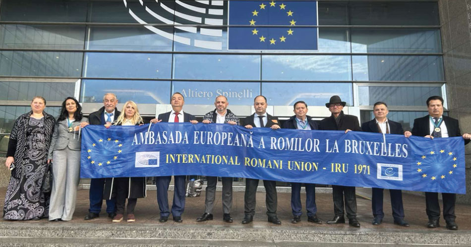
Сдружението е регистрирано по Закона за ЮЛНСЦ на 02.04.2024 със седалище в Стара Загора, България за извършване на дейност в обществена полза.
Председател на сдружението е г-жа Венка Василева.
Управителният съвет на сдружението се състои от три члена.
Сдружение „Ръка за ръка 8“ се регистрира да работи и съдейства за развитието и утвърждаването на духовните ценности, добрите практики в развитието на гражданското общество, социалното, правното и неформалното образование, културата, физическата култура; подпомагане личностната реализация и изява на младите хора и социалната интеграция на младежи в неравностойно социално и културно положение; осъществяване на младежки дейности и инициативи; решаването на проблемите и спазването на правата на децата и младежите; подпомага дейности свързани с опазването на природата и околната среда; да улеснява интегрирането на младите хора в обществото, насърчаването на тяхната инициативност и бъдеща социална и професионална реализация; да насърчава сътрудничеството с български и чуждестранни младежки организации с цел обмяна на опит в областта на образованието, културата, проблемите на младежта и стимулира диалога между младежите от страните членки на ЕС; да спомага за развитието интересите и потребностите на младите хора в сферата на технологиите, културата, спорта и други; да допринася за разбиране на разнообразието на общата европейска култура и общите европейски ценности; да насочи общественото внимание към ценностите и поведението на младите хора; да защита социалните интереси на младите хора; да полага усилия за намаляване агресивността и противообществените прояви на младите хора; да насърчава младежите към контрол върху и участие в управлението на общините, регионите и страната; да участва в разработването на местни, регионални и национални стратегии във всички сфери на обществения живот, представляващи интерес и засягащи младите хора; да съдейства за изграждането и утвърждаването в обществото и сред младежта на значимостта на музикална култура; да съдейства за популяризиране и реализация на творчеството на талантливи млади хора в страната и чужбина; да повишава квалификацията на младите хора и насърчаването им за постигане на по- добри постижения; да участва в разработването на механизми за предоставяне на качествени и достъпни услуги в съответствие с потребностите и интересите на младите хора: участие в проекти и програми за финансиране от европейски и други донорски програми и фондове, български държавни фондове, програми на чуждестранни правителства и други финансиращи институции, свързани с дейността, насочена за постигане целите на Сдружението; да търси реализирането и на други цели, определени със закон.
Сдружението постига целите си в партньорство с държавни, общински институции, неправителствени български и международни организации, работещи в областта на младежките дейности; участие в български и международни програми и проекти, български държавни фондове, програми на чуждестранни правителства и други финансиращи институции, свързани с целите на Сдружението; осъществяване на контакти и съвместна работа със сродни организации от страната и чужбина; организиране и провеждане на семинари, конференции, срещи, симпозиуми, кръгли маси и други мероприятия по проблемите, свързани с основните цели на Сдружението; дискусии и лекции, симулационни игри, към които ще се стреми да привлече младите хора от страната и чужбина чрез обмени по съответни програми, изготвяне на проекти, съобразно целите на Сдружението; разработка на стратегии и практики в областта на младежкия обмен и сътрудничество, както и лобиране в полза на тяхната реализация; програми и проекти за защита на гражданските, социални и трудови права на младите хора; приобщаване на младите хора към съвременното информационно общество, информационните и комуникационни технологии; разработване и прилагане на образователни, информационни и квалификационни програми за ученици, студенти, работници и служители; създаване на информационни фондове, участие в национални и международни програми, подпомагане на други организации, работещи по същите теми, стимулиране и подпомагане на личностната реализация на младите хора; популяризира чрез списания, бюлетини, брошури, плакати, материали от конференции и други подобни издания, чрез електронни средства и носители, публикации, кампании и обществени изяви с цел повишаване интереса на медиите, институциите, организациите и обществото към Сдружението, към актуалните проблеми на младите хора и към развитие на културата на младежите; иницииране и подкрепа на активни, граждански дейности, ориентирани предимно към младите хора; изследване на проблемите на младежта; провеждане на социална дейност и организиране на помощни акции за хора в неравностойно социално положение; информационна дейност, насочена към превенция по отношение решаването на проблеми като СПИН, наркомании, полово предавани болести, сексуална култура, насилието при младите хора и др. подобни; издаване на информационни, рекламни и пропагандиращи материали, отнасящи се до проблеми, касаещи младите хора.
Партньори на сдружение „Ръка за ръка 8“:
• International Romani Union (IRU), Belgium;
• Романо Ило, Скопие, Северна Македония;
• Фондация Гюлчай, София.
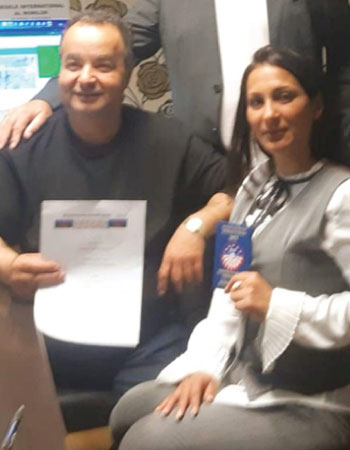
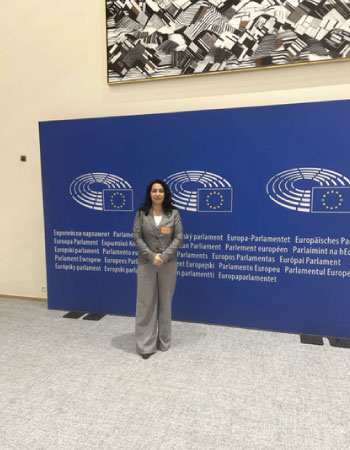
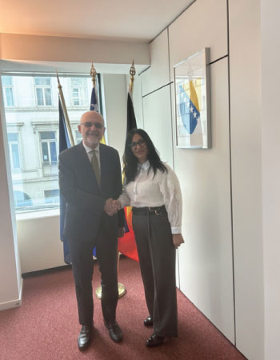
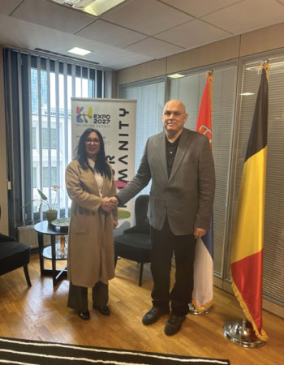
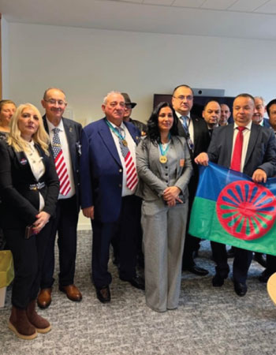
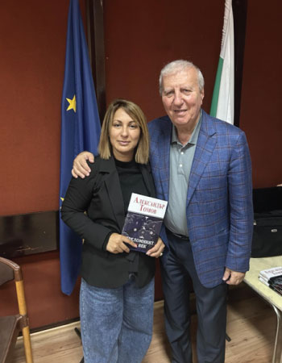
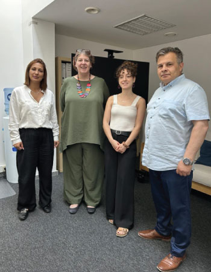
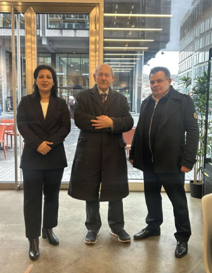
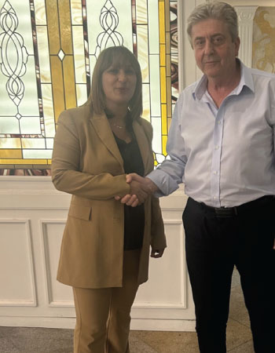
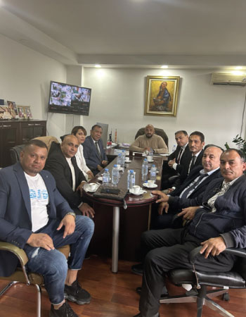
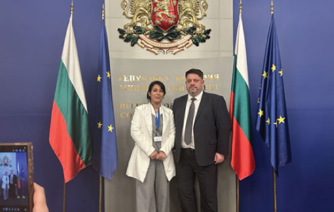
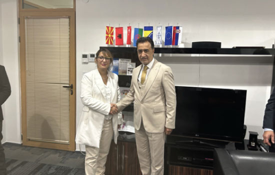
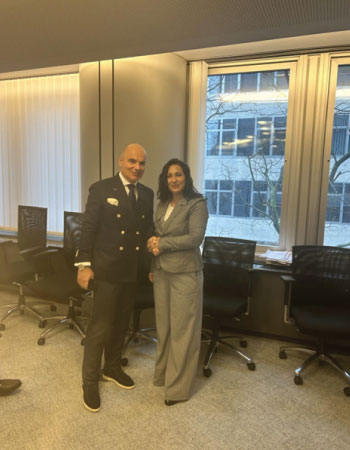
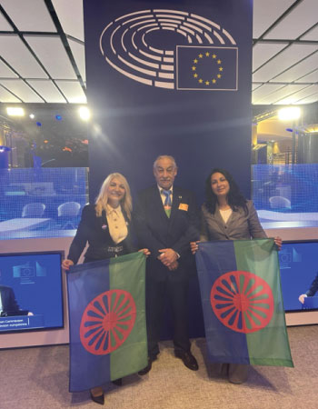
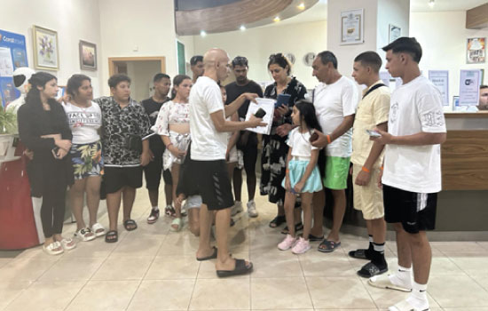
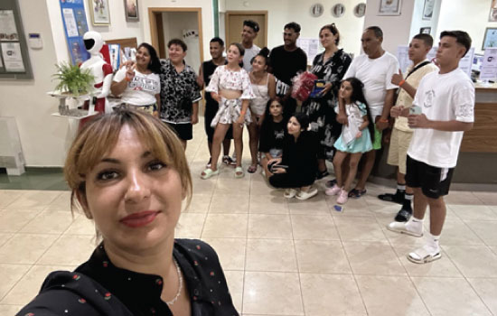
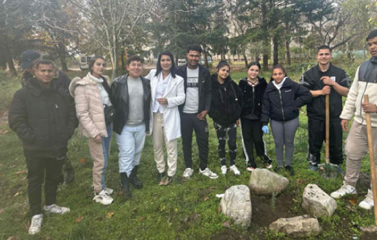
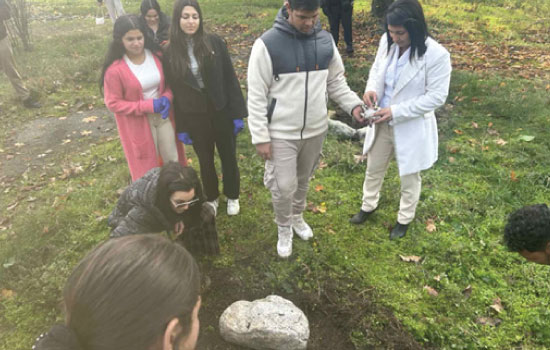
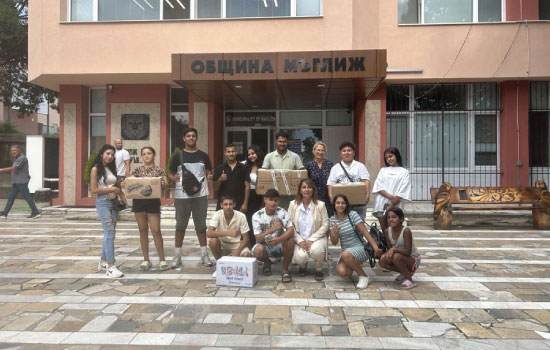
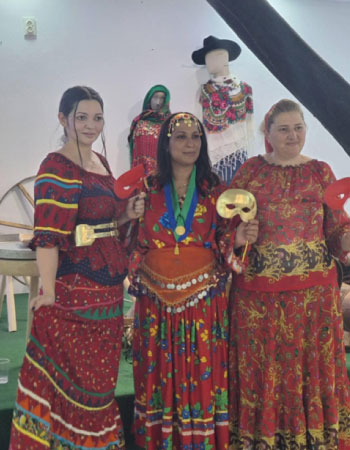